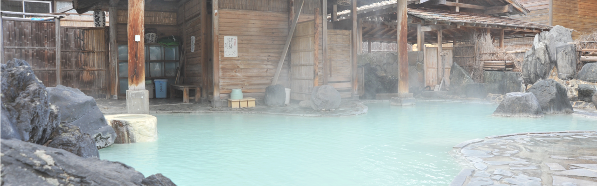

岩手の秘湯３選


新山根温泉
新山根温泉
新山根温泉
市郊外の山根町にある静かな山あいの温泉。泉質はアルカリ単純硫黄冷鉱泉。PH値は10.7で県内では最高値。ラドンの含有量も高く「つるつる・すべすべ」の肌ざわりが特徴です。神経痛、糖尿病、皮膚病など幅広い効能があるといわれています。
営業時間：日帰り入浴 大浴場 9:00～21:00
料金：大人480円 小学生230円 幼児無料
アクセス：〒028-8521 岩手県久慈市山根町下戸鎖 4-5-1
アクセス：〒028-8521 岩手県久慈市山根町下戸鎖 4-5-1
TEL：0194-57-2222
鶯宿温泉

鶯宿温泉
鶯宿温泉
開湯450年の伝統を誇る温泉。その名称は、その昔一羽の鶯が傷を温泉に浸して治していたことに由来します。約2ｋｍにわたって旅館・ホテルが立ち並び、温泉地の風情がたのしめます。
営業時間:日帰り入浴可能時間/11:00~20:00 15:00~20:00
料金：日帰り入浴料/大人550円 小人250円
アクセス：〒028-8521 岩手県久慈市山根町下戸鎖 4-5-1
アクセス:岩手県岩手郡 雫石町鴬宿6-25-20
TEL：019-695-2209
山の神温泉

山の神温泉
山の神温泉
泉質はアルカリ性単純温泉で、神経痛、筋肉痛、関節痛、五十肩などに効果があり、つるつるとした肌触りのお湯が特徴。良質の源泉100%掛け流しの温泉旅館です。